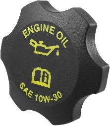

The Internal Combustion Engine is the propulsion method of the majority of cars on the road. It uses controlled explosions essentially to power a shaft called the crankshaft by pushing down on a piston. This combustion creates a lot of heat, so the engine includes a cooling system to cool it, as well and an oil system to lubricate it. The oil needs to be changed on average every 5,000 miles or so, but depending on the car, engine, and type of oil, that can be anywhere between 3,000 and 15,000 miles, so always be sure to consult your manual for your car to know.
All car engines nowadays are 4-stroke engines, meaning there are 4 strokes in a single cycle. The 4 strokes are called the Intake stroke, Compression stroke, Power stroke, and Exhaust Stroke. This is usually expressed as the pseudonym Suck, Squeeze, Bang, Blow. The intake stroke starts by opening the intake valve and bringing in a mixture of air and fuel. This is happening while the piston is moving down, creating a vacuum and sucking the air/fuel mixture into the cylinder. Then the intake valve closes and the compression stroke begins. This stroke squeezes the air and fuel mixture up against the top of the cylinder next to the spark plug. The spark plug is a component that creates a spark that ignites the squeezed mixture, causing a small explosion that forces the piston back down. This is called the power stroke. As the piston starts to come back up after the power stroke, the exhaust valve opens to let the burned mixture out. Then the cycle starts over again.
The pistons are connected to a shaft that’s called the crankshaft. The crankshaft is connected to the transmission through the flywheel, which is used to smooth out the output of the engine. The transmission is where your car shifts gears.
Some basic maintenance you can do on your car starts with the fluids. The primary fluids your engine needs to operate is oil and coolant. You car will have something called your oil dipstick. This is usually colored yellow and is attached to a long rod that goes down into the bottom of your engine in the oil pan and allows you to look at the oil level and quality of your oil. If you pull the dipstick out, it will have a marking that indicates full and usually a marking that indicates an acceptable level (You can find the marking is your owners manual). If the oil is under the acceptable, you will need to fill your oil up to the full mark. Your oil cap should be on the top of your engine, usually marked with an engine oil symbol. 
Usually on your oil cap, it tells you what type of oil your car should have. In this image, this car should have oil that is 10W-30. You should also lookup your car year and model and find out if it needs fully synthetic or more conventional oil.
You should also check your coolant levels and make sure it is within acceptable ranges. If not, you should refill it. With both fluids, they should be in a closed circuit, meaning there should be no loss in fluid. If there is a significant loss of fluid to the point it is out of the acceptable range, it may be possible that your engine is burning that fluid, which is not normal and should be brought to a mechanic for a more thorough inspection. You engine also needs both of these fluids to run, and if either of them are dangerously low or empty, the engine should not be started as it can cause significant damage.
Maintenance wise, EV cars aren’t really easy to maintain as an owner, since they are extremely dangerous with the high voltage. As for the motors, the best way to deal with them is to just take it to the dealership or a shop that specializes in EVs.